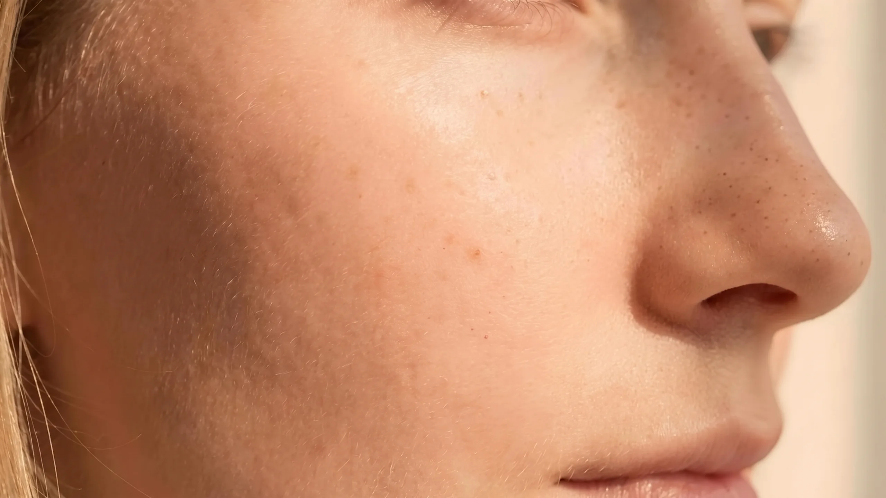

Araç · Leke ve güneş
Güneş lekesi eğiliminizi hangi alışkanlıklar artırıyor?
Güneş lekesi çoğu zaman tek bir yazın değil, yılların birikiminin sonucudur. Sekiz kısa soruda güneş koruyucu, öğle güneşi, solaryum, cam arkasında geçen saatler ve yanık öykünüzü yanıtlayın; lekelenmeyi en çok etkileyebilecek alışkanlıklarınızı ve her biri için uygulanabilir bir öneriyi görün. Puan vermez, tanı koymaz; yanıtlar cihazınızdan çıkmaz.

Temsilî görsel · yapay zekâ ile üretildiGüneşle ilişkinizi sekiz soruda tarif edin
Doğru ya da yanlış cevap yok; gündelik hayatınızı düşünerek size en yakın seçeneği işaretleyin. Sonunda lekelenmeyi en çok etkileyebilecek alışkanlıklarınız, nedenleri ve küçük değişiklik önerileriyle sıralanır.
- Koruyucu
- Öğle güneşi
- Bronzlaşma
- Solaryum
- Cam arkası
- Yanık
- Her gün, mevsim fark etmeksizin
- Yalnız yazın ya da güneşli günlerde
- Nadiren ya da hiç
- Evet, birkaç saatte bir
- Bazen
- Hayır, sabah sürdüğüm yeter diye düşünürüm
- Çok az, gölgeyi seçerim
- Hafta sonları ya da tatilde uzun süre
- Hemen her gün uzun süre
- Bronzlaşmaktan kaçınırım
- Hafif renk almayı severim
- Bilerek güneşlenir, koyu bronz isterim
- Hiç
- Geçmişte birkaç kez
- Düzenli olarak
- Düzenli olarak
- Bazen
- Hiç
- Hayır
- Haftada birkaç gün
- Hemen her gün
- Hayır
- Bir-iki kez
- Hemen her yaz
Lekelenmede rol oynayan ultraviyole ışınlar kışın ve bulutlu havada da cilde ulaşır. Etkisi birikimlidir; yıllar içinde toplanır.
Her sabah yüz, boyun ve el sırtına en az SPF 30, geniş spektrumlu bir koruyucu sürün.
Koruyucu ter, sürtünme ve dokunmayla azalır; uzun süre dışarıda kalınan günlerde sabahki uygulamanın koruması öğleden sonraya ulaşmaz.
Dışarıdayken yaklaşık iki saatte bir ve terleme ya da yüzme sonrasında yenileyin.
Ultraviyole ışınların en yoğun olduğu 11.00–15.00 arası, kısa sürede en fazla ışın alınan zaman dilimidir.
Bu saatlerde gölgeyi seçin; dışarıdaysanız koruyucuyu şapka ve giysiyle destekleyin.
Ten rengindeki koyulaşma, derinin güneşe karşı ürettiği pigmentin artmasıdır; aynı süreç var olan lekelerin de koyulaşmasına zemin hazırlar.
Güneşlenmeyi kısa tutun; leke ya da lazer planınız varsa bronzlaşmadan önce muayenede konuşun.
Solaryum cihazları, Dünya Sağlık Örgütü’ne bağlı Uluslararası Kanser Araştırma Ajansı tarafından insanlar için kanserojen grubunda sınıflandırılır; lekelenmeyi de hızlandırabilir.
Solaryumu bırakmayı düşünün ve muayenede ne sıklıkla kullandığınızı belirtin.
Geniş kenarlı bir şapka alnı, elmacıkları ve burun sırtını; güneş gözlüğü göz çevresinin ince derisini korur. Lekeler en sık bu bölgelerde belirginleşir.
Uzun süre dışarıda kalacağınız günlerde şapka ve gözlüğü koruyucuyla birlikte kullanın.
Sıradan cam, yanığa yol açan ışınların çoğunu tutar; ama lekelenmede rol oynayan uzun dalga boylu ışınların bir bölümü camdan geçer. Direksiyonda ya da pencere kenarında geçen saatler bu yüzden önemlidir.
Gün ışığı alan bir yerde uzun saatler geçiriyorsanız iç mekânda da koruyucu kullanın.
Güneş yanığı, derinin aldığı ışının onarabileceğinden fazla olduğunu gösterir; tekrarlayan yanıklar leke ve diğer güneş hasarı için de bir uyarıdır.
Yanık yaşadığınız ortamları ve saatleri not edin; korumayı o koşullara göre planlayın.
Aşağıdaki başlıklar yanıtlarınızdan seçildi. Bu bir tanı değil, muayenede konuşabileceğiniz bir alışkanlık özetidir.
Yanıtlarınızda lekelenmeyi belirgin biçimde artıran bir alışkanlık öne çıkmadı.
Lekeler yalnız güneşle ilişkili değildir; hormonlar, sivilce sonrası izler ve bazı ilaçlar da rol oynayabilir. Var olan lekelerin tipi muayenede ayırt edilir.
Leke uygulamalarına başlamadan önce lekenin tipi belirlenir ve güneş koruması düzene sokulur; koruma olmadan yapılan uygulamaların etkisi kısa sürebilir.
Yeni çıkan, büyüyen, rengi ya da sınırı değişen, kanayan veya kaşınan ben ve lekeler estetik değil tıbbi bir değerlendirme gerektirir; bunun için bir dermatoloji uzmanına başvurun.
Arka plan
Güneş lekesi nasıl oluşur?
Derideki pigment hücreleri, ultraviyole ışığa karşı koruyucu bir renk maddesi üretir. Işık yıllar boyunca aynı bölgelere düştükçe bu üretim bazı noktalarda düzensizleşir ve kalıcı koyu alanlar ortaya çıkar.
Birikimli bir süreç
Bugün görülen lekeler çoğu zaman yıllar önceki güneş alışkanlıklarının izidir. Bu yüzden korumaya başlamak için hiçbir zaman geç değildir; yeni lekelerin oluşumu yavaşlar.
En açık bölgeler
Elmacıklar, alın, burun sırtı, el sırtı ve dekolte, güneşi en çok ve en dik açıyla alan bölgelerdir. Lekeler de çoğunlukla buralarda belirginleşir.
Her leke aynı değildir
Güneş lekesi, hormonlarla ilişkili renk değişikliği ve sivilce sonrası iz birbirine benzeyebilir. Hangi tür olduğu muayenede ayırt edilir; plan da buna göre kurulur.
Gündelik koruma
Koruyucu seçerken ve kullanırken
Ambalajında "geniş spektrum" ifadesi geçen ve koruma faktörü en az 30 olan bir ürün, gündelik kullanım için yaygın kabul gören başlangıç noktasıdır. Ürünün etkisi kadar kullanılan miktar da önemlidir: yüz ve boyun için ince bir tabaka çoğu zaman yeterli korumayı sağlamaz.
Koruyucu, şapka, gölge ve giysiyle birlikte düşünüldüğünde anlam kazanır. Uzun süre dışarıda kalınan günlerde birkaç saatte bir yenilemek, terleme ya da yüzme sonrasında yeniden sürmek gerekir.
Leke uygulaması planlanıyorsa koruma düzeni daha da önemli hâle gelir; uygulama öncesinde ve sonrasında bölgenin güneşten korunması, sonucun kalıcılığını doğrudan etkiler.
Sık gelen sorular
Güneş ve leke hakkında merak edilenler
Metni hazırlayan ve tıbbi açıdan gözden geçiren: Uzm. Dr. Rahmi Cebeci (Aile Hekimliği Uzmanı · Medikal Estetik Sertifikalı).
Buradaki anlatım herkese yöneliktir; size özel bir teşhis ya da tedavi planı sunmaz, muayenenin yerini tutmaz. Her uygulamanın etkisi kişiye göre farklı olur.